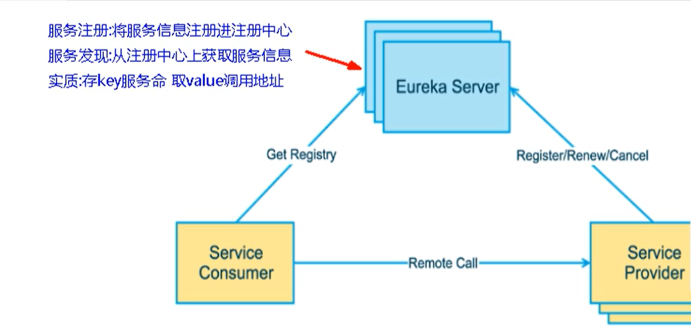
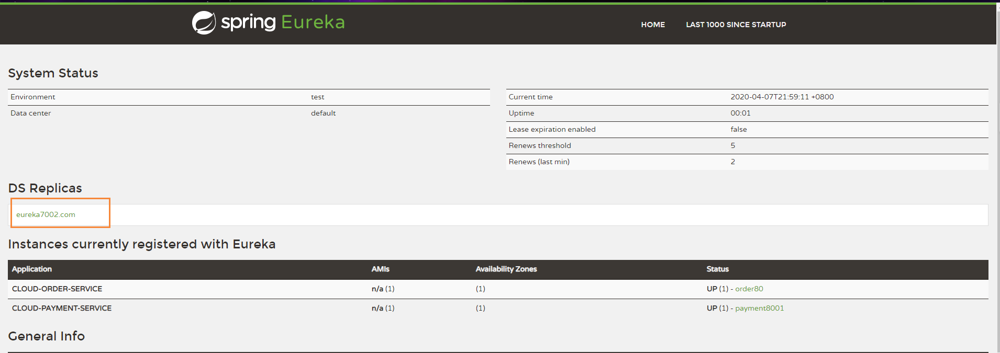
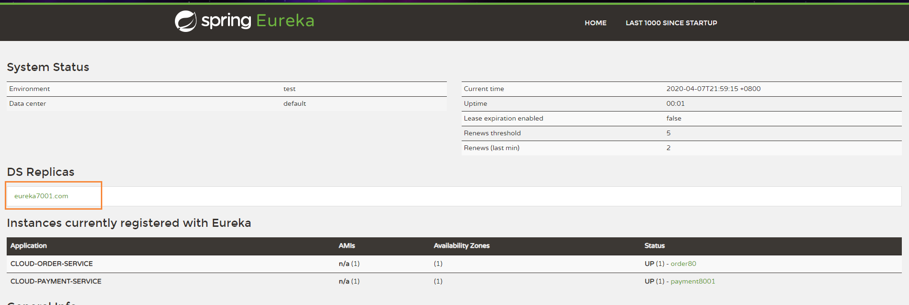
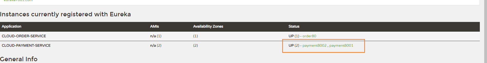
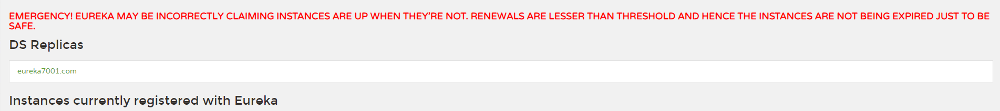
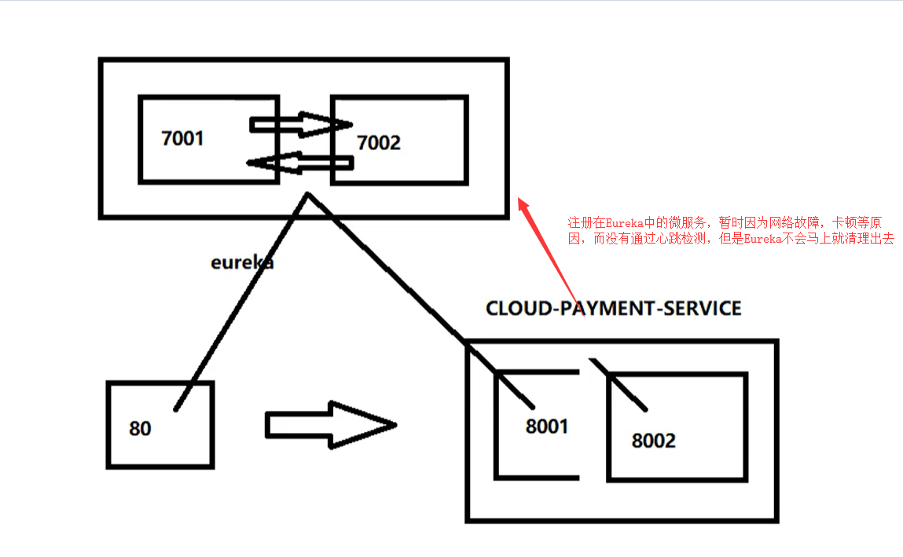
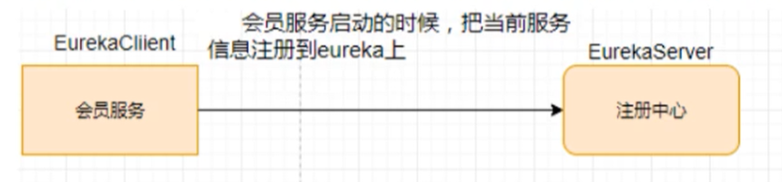

Eureka集群 没有集群带来的高可用，会带来单点故障
Eureka工作原理
服务注册：将服务信息注册进注册中心
服务发现：从注册中心上获取服务信息
实质：存key服务命名，取value调用地址
先启动eureka注册中心
启动服务提供者payment支付服务
支付服务启动后，会把自身信息（比如 服务地址以别名方式注册进eureka）
消费者order服务在调用接口时候使用服务别名去注册中心获取实际的RPC远程调用地址
消费者获得调用地址后，底层实际是利用HttpClient技术实现远程调用
消费者获取服务地址后会缓存在本地JVM内存中，默认每隔30秒更新一次服务调用地址

微服务RPC远程调用最核心的就是：高可用
因为假设注册中心只有一个，如果出现了故障，那么将会导致整个微服务不可用，所以需要搭建Eureka注册中心集群，实现负载均衡 + 故障容错
Eureka集群原理 互相注册，相互守望
搭建集群 原来单机版本时，我们的注册中心的配置文件为
1 2 3 4 5 6 7 8 9 10 server: port: 7001 eureka: instance: hostname: localhost #eureka服务端实例名称 client: register-with-eureka: false #表示不向注册中心注册自己 fetch-registry: false #false表示自己就是注册中心，我的职责就是维护服务实例,并不区检索服务 service-url: defaultZone: http://${eureka.instance.hostname}:${server.port}/eureka/
但是如果使用了集群后，我们的eureka就需要相互注册了，也就是 7001的需要注册到7002, 而7002注册7001
同时 hostname也不能重复，需要有两个主机的ip
eureka 7001
1 2 3 4 5 6 7 8 9 10 11 server: port: 7001 eureka: instance: hostname: eureka7001.com #eureka服务端实例名称 client: register-with-eureka: false #表示不向注册中心注册自己 fetch-registry: false #false表示自己就是注册中心，我的职责就是维护服务实例,并不区检索服务 service-url: # 向另外一个eureka服务注册 defaultZone: http://eureka7002.com:7002/eureka/
eureka 7002:
1 2 3 4 5 6 7 8 9 10 11 server: port: 7002 eureka: instance: hostname: eureka7002.com #eureka服务端实例名称 client: register-with-eureka: false #表示不向注册中心注册自己 fetch-registry: false #false表示自己就是注册中心，我的职责就是维护服务实例,并不区检索服务 service-url: # 向另外一个eureka服务注册 defaultZone: http://eureka7001.com:7001/eureka/
启动后，我们能发现，在eureka7001上，能看到7002注册上去了

同时在eureka7002上，能看到7001，这个时候说明我们的eureka集群已经搭建完毕

服务注册Eureka集群 我们修改服务提供者payment的yml配置，同时将两个eureka地址配置在defaultZone中
1 2 3 4 5 6 7 8 9 10 11 12 13 14 15 16 eureka: client: #表示向注册中心注册自己 默认为true register-with-eureka: true #是否从EurekaServer抓取已有的注册信息，默认为true,单节点无所谓,集群必须设置为true才能配合ribbon使用负载均衡 fetch-registry: true service-url: # 入驻地址 # defaultZone: http://localhost:7001/eureka/ #集群版 defaultZone: http://eureka7001.com:7001/eureka/,http://eureka7002.com:7002/eureka/ #服务名称 instance: instance-id: payment8001 #访问路径显示IP地址 prefer-ip-address: true
在上面的图中，我们能发现，payment服务已经成功注册到两台eureka集群中了
服务提供者集群 我们需要搭建多个服务提供者
例如：payment8001：
1 2 3 4 5 6 7 8 9 10 11 12 13 14 15 16 17 18 19 20 21 22 23 server: port: 8001 spring: application: name: cloud-payment-service #服务名称 datasource: type: com.alibaba.druid.pool.DruidDataSource #当前数据源操作类型 driver-class-name: com.mysql.jdbc.Driver url: jdbc:mysql://localhost:3306/cloud2020?characterEncoding=utf8&useSSL=false&useUnicode=true username: root password: root eureka: client: #表示向注册中心注册自己 默认为true register-with-eureka: true #是否从EurekaServer抓取已有的注册信息，默认为true,单节点无所谓,集群必须设置为true才能配合ribbon使用负载均衡 fetch-registry: true service-url: # 入驻地址 # defaultZone: http://localhost:7001/eureka/ #集群版 defaultZone: http://eureka7001.com:7001/eureka/,http://eureka7002.com:7002/eureka/
和payment8002：
1 2 3 4 5 6 7 8 9 10 11 12 13 14 15 16 17 18 19 20 21 22 23 24 25 26 27 28 29 30 31 32 33 34 35 36 37 server: port: 8002 spring: application: name: cloud-payment-service #服务名称 zipkin: base-url: http://localhost:9411 sleuth: sampler: # 采集率介于0到1之间，1表示全部采集 probability: 1 datasource: type: com.alibaba.druid.pool.DruidDataSource #当前数据源操作类型 driver-class-name: com.mysql.jdbc.Driver url: jdbc:mysql://localhost:3306/cloud2020?characterEncoding=utf8&useSSL=false&useUnicode=true username: root password: root eureka: client: #表示向注册中心注册自己 默认为true register-with-eureka: true #是否从EurekaServer抓取已有的注册信息，默认为true,单节点无所谓,集群必须设置为true才能配合ribbon使用负载均衡 fetch-registry: true service-url: # 入驻地址 # defaultZone: http://localhost:7001/eureka/ #集群版 defaultZone: http://eureka7001.com:7001/eureka/,http://eureka7002.com:7002/eureka/ #服务名称 instance: instance-id: payment8001 #访问路径显示IP地址 prefer-ip-address: true mybatis: mapper-locations: classpath:mapper/*.xml type-aliases-package: com.atguigu.springcloud.entity #所有entity别名所在包
这里需要注意的就是，为了保证这两个服务，对外暴露的都是同一个服务提供者，我们的服务名需要保持一致
1 2 3 spring: application: name: cloud-payment-service #服务名称
启动后，我们发现CLOUD-PAYMENT_SERVICE上有两个服务提供者了，分别为：8001和8002

同时我们需要服务名进行调用
1 http://CLOUD-PAYMENT_SERVICE
通知在RestTemplate需要设置负载均衡策略，即 @LoadBalanced注解，不然它不知道调用哪个微服务地址
1 2 3 4 5 6 7 8 @Configuration public class ApplicationContextConfig { @Bean @LoadBalanced //赋予RestTemplate负载均衡的能力 public RestTemplate getRestTemplate() { return new RestTemplate(); } }
这个就是Rabbon的负载均衡功能，默认是轮询
Ribbon和Eureka整合后，Consumer可以直接调用服务而不再关心地址和端口号，且该服务还有负载均衡的功能
actuator微服务信息完善 要做图形化的展示这块，这两个依赖都需要导入
1 2 3 4 5 6 7 8 9 10 <!--web启动器--> <dependency> <groupId>org.springframework.boot</groupId> <artifactId>spring-boot-starter-web</artifactId> </dependency> <!--监控--> <dependency> <groupId>org.springframework.boot</groupId> <artifactId>spring-boot-starter-actuator</artifactId> </dependency>
actuator：主要用于IP信息完善
actuator查看健康状态
1 http://192.168.80.1:8002/actuator/health
服务名称修改 修改后，对外暴露的就是服务名称
1 2 3 4 Erueka #服务名称 instance: instance-id: payment8001
设置服务的IP显示 1 2 3 4 5 Erueka #服务名称 instance: #访问路径显示IP地址 prefer-ip-address: true
服务发现Discovery Eureka的新的注解标签 @EurekaDiscovery
对于注册进Eureka里面的微服务，可以通过服务发现来获得该服务的信息
1 2 @Resource private DiscoveryClient discoveryClient;
获得服务列表
1 2 3 4 5 6 7 8 9 10 11 12 13 14 15 16 17 # 获取列表 List<String> services = discoveryClient.getServices(); # 获取实例 List<ServiceInstance> instances = discoveryClient.getInstances("CLOUD-PAYMENT-SERVICE"); # 获取ServiceId instances.get(0).getServiceId(); # 获取主机名 instances.get(0).getHost(); # 获取端口号 instances.get(0).getPort(); # 获取URL instances.get(0).getUrl();
Eureka自我保护机制 概念 保护模式主要用于一组客户端和Eureka Server之间存在网络分区场景下的保护，一旦进入保护模式，Eureka Server将会尝试保护其服务注册表的信息，不再删除服务注册表中的数据，也就是不会注销任何微服务。
如果在Eureka Server的首页看到以下这段提示，说明Eureka进入了保护模式

通俗的话来说：某时刻某一个微服务不可用了，Eureka不会立刻清理，依旧会对该微服务的信息进行保存，属于CAP里面的AP分支。
导致原因 默认情况下，如果EurekaServer在一定时间内没有接收到某个微服务实例的心跳，EurekaServer将会注销该实例，默认90秒。但是当网络分区故障发生（延时，卡顿，拥挤）时，微服务与EurekaServer之间无法正常通信，以上行为可能变得非常危险了- 因为微服务本身其实是健康的，此时不应该注销这个微服务，Eureka通过 自我保护模式 来解决这个问题，当EurekaServer节点在短时间丢失过多客户端，那么这个节点就会进入自我保护模式

这是一种高可用的机制

在自我保护模式下，Eureka Server会保护服务注册表中的信息，不在注销任何服务实例
它的设计哲学就是宁可保留错误的服务注册信息，也不盲目注销任何可能健康的服务实例
综上，自我保护模式是一种应对网络异常的安全保护措施，它的架构哲学是宁可保留所有微服务（健康的微服务和不健康的微服务都会保留）也不盲目注销任何健康的微服务。使用自我保护模式，可以让Eureka集群更加健壮，稳定。
禁止自我保护 Eureka默认开启自我保护
1 2 3 4 5 eureka: server: enable-self-preservation: true peer-node-read-timeout-ms: 3000 peer-node-connect-timeout-ms: 3000
同时在客户端进行设置
1 2 3 4 5 6 eureka: instance: # Eureka客户端向服务端发送心跳的时间间隔，单位为秒，默认30 lease-renewal-interval-in-seconds: 1 # Eureka服务端在收到最后一次心跳后等待时间上限，单位为秒，默认为90秒，超时将剔除服务 lease-expiration-duration-in-seconds: 2
设置完成后，只要服务宕机，会马上从服务注册列表中清除
关于Eureka停更 Eureka停更后，出现了其它的替代者